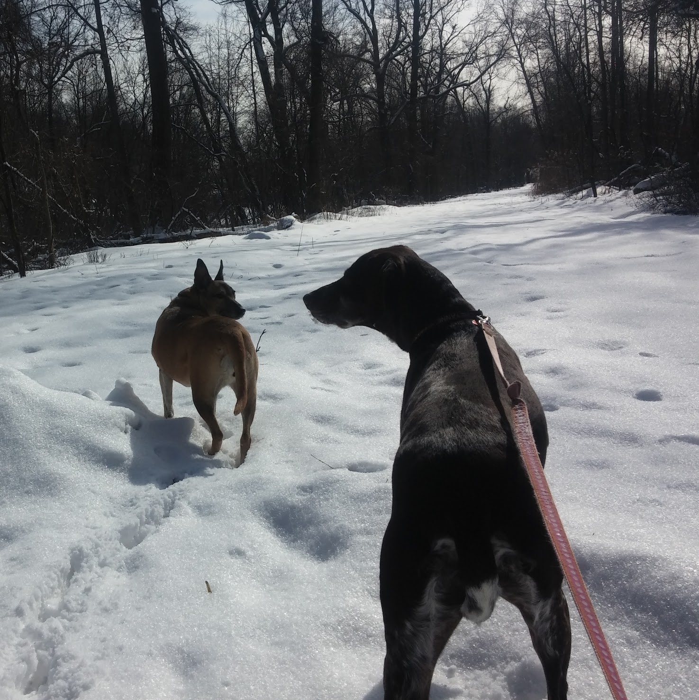

My name is Matt Walsh and I'm currently enrolled in Dev Bootcamp. I'm working my way through the remote 'Phase 0' curriculum now, and I'll be attending at the NYC site this September.
I consider myself a pretty okay solo front-end/Javascript hacker. But I'm trying to become a well-rounded developer with more full-stack knowledge and team experience. I'll have blog posts here about what I learn, my experiences with Dev Bootcamp, and more.
I believe there's a lot more to being a good developer than simply knowing how to code. And I'm optimistic that my experiences at Dev Bootcamp will help lead me on that path.
As for other interests, I enjoy computer games, especially roguelike games. I've beaten Nethack once, and Dungeon Crawl: Stone Soup three times. I even made my own little roguelike once for the 2015 7drl challenge.
I also draw ASCII art from time to time. Here's a robot.
________
__.--| _____ |'--.__
.''.\ | |# / / / /'.
|'.' | | \__/ / | `./\_
|___/ \____/ \____/ \
/ \_____.' '.________.:\o'\
/o_/'. \____/ / \__\
.',_/ :.==| |_.==. _.' |o_|
_.-..'o_.' / | / \| |o_|
/ .-|o_.' /===._\ | __/\ ()))))
|/ \ \ /___ \/==\==' \/\ //-\\\\\
,' / / `. / \ \ \| |////
`-' /)/).:' '.____/\\ ' ''''
_//// || \\\\_||
/ '.// .' \|
|""`-. |/ |""`-. |
| \| | \|
\___.' \___.'
_/___\\ _/___\\
/o o \\ /o o \\
'-=-=-=-'" '-=-=-=-'"
And when I'm away from the computer entirely, I enjoy walking the dogs through the parks and woods around the neighborhood.
If you have any feedback or questions about the site, you can reach me on Twitter @walsh9dbc or drop me an email at walsh9@gmail.com